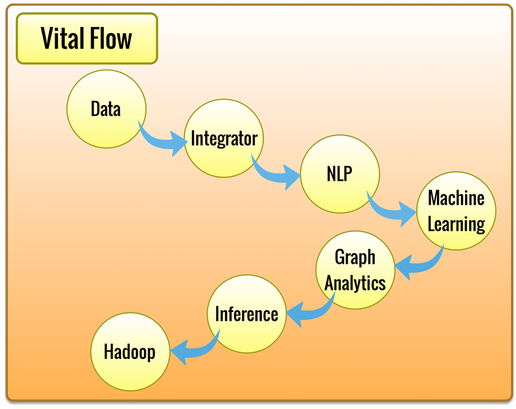

Vital Flow

Vital Flows are used to process data in workflows using different data
access and processing components strung together.
Vital Flows are distributed over servers using a queue.
Vital Flows consist of steps and sub-steps, and a Flow may "call"
another Flow, providing generalized data workflows.
The NLP Flow Server handles various text processing functions, such as
entity extraction, sentiment analysis, and topic categorization.
The Graph Analytics Server handles large-scale graph analysis, such as
for social network analysis.
The Data Flow Server interfaces with data repositories for accessing and
storing data.
The Integrator Flow Server interacts with external APIs, including
Facebook and Twitter APIs.
The Inference Flow Server provides a logical inference and rules engine.
The Machine Learning Flow Server uses learned models to categorize data.
The Hadoop Flow Server access Hadoop jobs and data.
DataScripts define and run a Vital Flow.